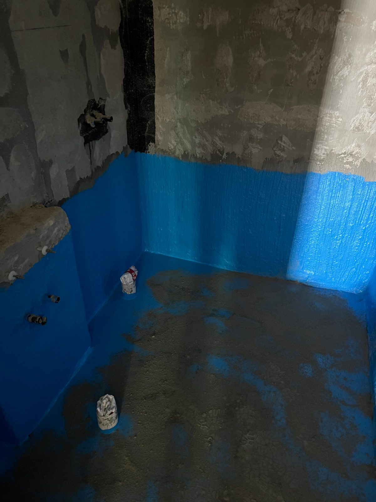
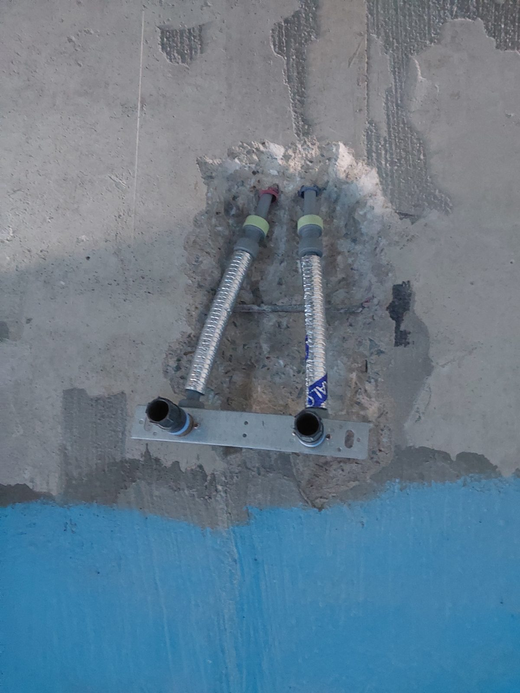

세종 도램마을 욕실 도막방수와 난방 배관 — 바닥을 연 김에 한 번에

방수층을 다시 잡으면서, 바닥을 연 김에 난방 배관 작업까지 함께 진행한 현장입니다. 공정을 묶으면 철거·복구가 한 번으로 끝납니다.
어떤 공사였나요
욕실 방수층 노후로 도막방수를 다시 하면서, 바닥을 연 김에 난방 배관 작업을 함께 진행한 현장입니다. 화장실 바닥을 철거하는 공사는 자주 할 수 있는 것이 아니라서, 바닥을 여는 김에 필요한 작업을 묶는 것이 비용 면에서 유리합니다.
도막방수란
액체 방수재를 바닥과 벽에 발라 이음매 없는 방수막을 만드는 공법입니다. 모서리와 배수구 주변처럼 물이 모이는 자리에 강한 것이 장점이라, 욕실 바닥에 많이 씁니다.

진행 순서
난방 배관을 배치·고정하고 누설이 없는지 확인한 뒤, 도막방수를 도포하고 배수구 주변을 보강했습니다. 방수는 건조 시간을 지켜 마감했습니다.

묶어서 하면 좋은 공정
방수와 난방, 방수와 배수구 위치 변경처럼 바닥을 열어야 하는 공정끼리 묶으면 철거와 복구 비용이 한 번으로 끝납니다. 견적 상담 때 바닥을 연 김에 같이 할 만한 작업이 있는지 물어봐 주시면 함께 검토해 드립니다.